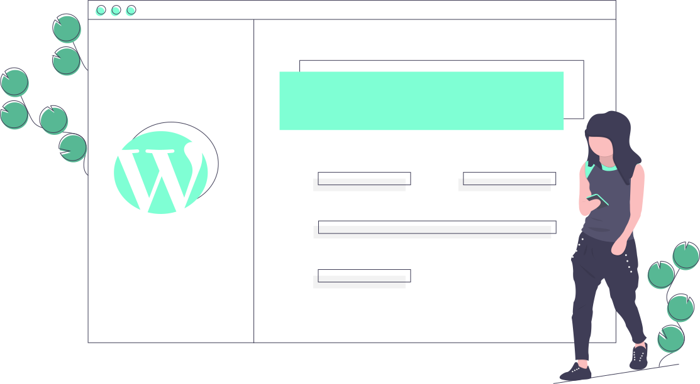

WebWizards
Solutions
"Todo grande desenvolvedor que você conhece chegou lá resolvendo problemas para os quais não estavam qualificados até realmente fazê-lo." ~Patrick McKenzie
"Software é uma ótima combinação entre arte e engenharia." ~Bill Gates"
"Um especialista é alguém que sabe cada vez mais sobre cada vez menos, até saber tudo sobre nada" ~Anonymous"
